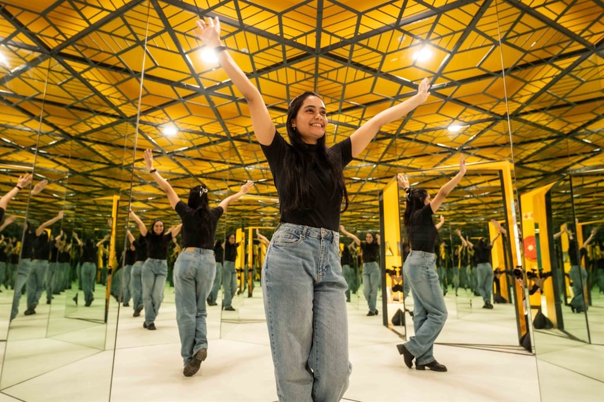

Explore The World Of Illusions:
South Africa's Newest Leisure Museum
ABSTRACT
Greetings from the land where illusion and reality coexist! The Illusions Museum The first of its
type in South Africa, Johannesburg is an intriguing new addition to the nation's recreational and
cultural scene. This museum, which opened in July 2024 at The Zone @ Rosebank, is more than just a
collection of displays; it's an experience meant to enthrall, inform, and enigmatize guests of all ages.
WHAT IS A LEISURE MUSEUM.
The typical idea of a museum is redefined by leisure museums. Leisure museums prioritize providing visitors
with immersive, interactive, and captivating experiences rather than preserving static items and following
a strictly instructional narrative.
THE HISTORY OF THE MUSEUM
An international network of interactive museums called the Museum of Illusions welcomes guests into the
fascinating realm of sensory sensations and optical illusions in interactive museums. The museum was
established in Zagreb, Croatia, in 2015 and has since spread to more than 30 locations across the globe,
enthralling visitors with its distinctive fusion of entertainment and knowledge. Exhibits at each place test
your senses, alter your perception, and cause you to doubt reality. The same fascinating experience can be
had in Johannesburg at the Museum of Illusions, which opened its doors in July of this year. This museum,
which is housed in The Zone Rosebank Mall, uses a variety of immersive displays and mind-bending installations
to bring the world of illusions to life.
HIGHLIGHTS OF THE MUSEUM
The Museum of Illusions Johannesburg features more than 60 displays that are meant to both amuse and educate
visitors. Every exhibit is a fun mental challenge that shows how easy visual and sensory signals may fool our
minds. You can think of it (at least partially) as a house of mirrors with the science still in place,
explaining in an easy-to-understand manner why your eyes and brain are being tricked. This has a lot of
potential for school trips and families who want their outings to be more intellectual but still enjoyable
and sensual. In the future, you'll probably see a ton of pictures from the Museum of Illusions Johannesburg.
Although food and beverages are prohibited within the museum, the customary "don't touch; "No photos" is not
an option. Staff members are even available to assist you with taking photos with your phone at some of the major
installations.
MUST SEE EXHIBITS
Enter the Museum of Illusions' Vortex Tunnel and be ready for an incredible adventure! As you maintain your
perfect balance, observe how your senses are deceived into believing that the ground is moving beneath you.
Will you be able to endure without experiencing vertigo?


The Infinity Room is a never-ending cycle of reflections that will make you wonder about the boundaries of space.

The Ames Room is a space that distorts scale and size, giving the impression that humans are either giants or dwarves.


Optical illusions are works of art and visual tricks that change and evolve depending on how you view them.


WHY VISIT?
All ages can have an instructive and enjoyable experience at the Museum of Illusions. It provides an opportunity to learn about how our perceptions
function while exploring a world where illusion and reality collide.
- Acquire Knowledge While Playing:One Learn about the intriguing science underlying psychology, vision, and perception.
- Capture Special Moments: The museum is ideal for making treasured memories because of its engaging and visually appealing exhibits.
- Suitable for All Ages: There is something to appreciate for everyone, regardless of age and curiosity.
MUSEUM EXPERIENCE
More than 60 interactive displays in the museum stimulate the senses, test perceptions, and foster an exploring, lively atmosphere.
Immersion in optical illusions, visual tricks, and interactive exhibits that combine psychology, physics, arithmetic, and art is
available to visitors. It is the perfect place for memorable and sharing experiences because, in contrast to traditional museums,
photography is welcomed only by staff supervision.
Visitor Information
Operating Hours
TICKET BOOKING
Tickets can be purchased online or at the door, but advance booking is recommended due to the museum’s popularity.
- Adults: R190
- Children (4 – 12 years old): R150
- Children under 4: FREE
- Family Ticket (2x adults, 2x children aged 4 -12): R580
As for other useful need TV to knows, Museum of Illusions Johannesburg is open 7 days a week.
SPECIAL EVENTS AND ACTIVITIES
The museum caters to group events, such as school trips, corporate functions, and birthday parties,
offering a unique and engaging setting.